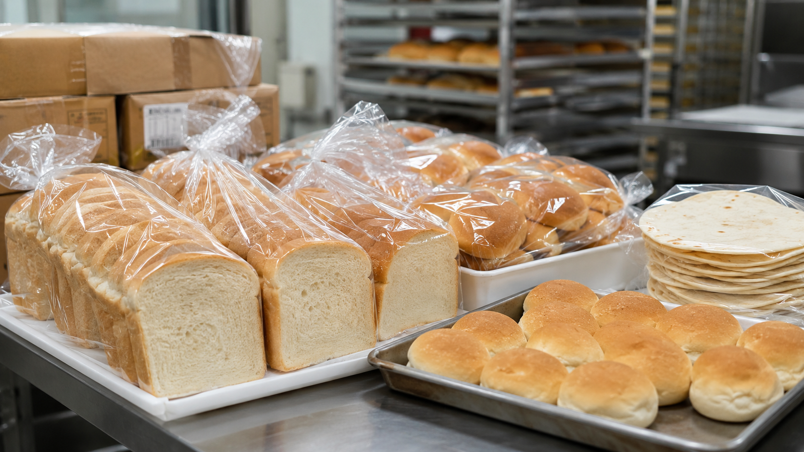
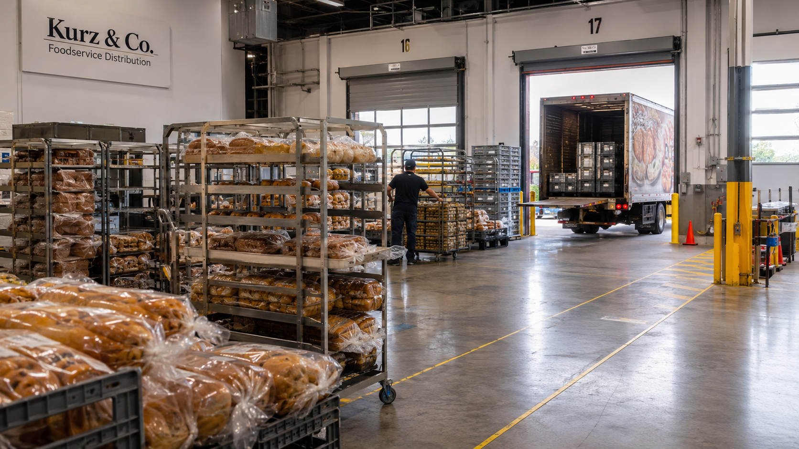
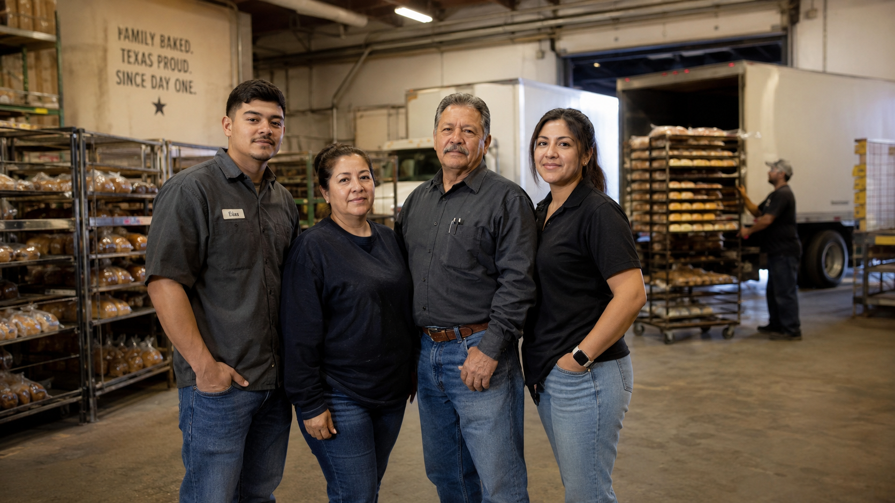
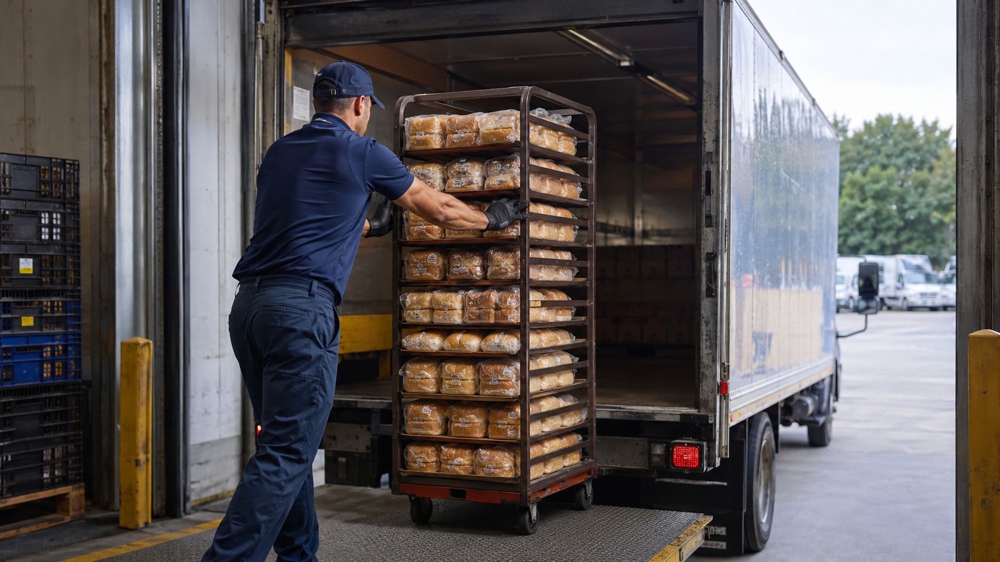

Fresh bread delivery built for food service reliability.
Kurz & Co. supports schools, restaurants, healthcare, hospitality, and institutional food service partners with dependable bakery distribution across Texas.
Why Kurz & Co.
Foodservice customers need more than bread. They need consistency, reliable delivery windows, practical ordering, and a supplier that understands institutional volume.
Family-Owned Texas Roots
Regional service with relationship-driven accountability.
Foodservice Focused
Built around schools, restaurants, healthcare, and institutions.
Route Reliability
Warehouse staging and daily route operations designed for dependable delivery.
Bakery products for commercial kitchens.
Practical, high-volume bakery supply for cafeterias, restaurants, healthcare facilities, and regional foodservice operators.

Bread
Sandwich breads, sliced loaves, and institutional bakery products.
Buns & Rolls
Hamburger buns, hot dog buns, dinner rolls, and foodservice formats.
Tortillas & Bakery
Bulk tortillas, breakfast bakery, and related foodservice products.
Route-based distribution across Texas.
Behind every delivery is a logistics operation: route planning, warehouse staging, fresh product handling, and dependable service windows for institutional customers.

Serving Texas foodservice partners.
Houston • Dallas • San Antonio • East Texas • Regional Routes
Industries Served
Kurz & Co. is positioned for customers who need consistency, reliability, and practical foodservice support.
Schools & ISDs
Reliable bakery supply for cafeteria programs and student meals.
Restaurants
Fresh bread, buns, rolls, and bakery products for commercial kitchens.
Healthcare & Institutions
Dependable bakery distribution for high-volume foodservice operations.

Family-owned. Operationally focused.
Kurz & Co. represents the kind of regional food infrastructure customers rely on every day: practical, accountable, and built around long-term service relationships.
Careers in bakery distribution.
Route drivers, warehouse staff, operations teams, and customer support roles help keep Texas foodservice customers supplied.
Ask About Open Positions
Let’s talk about your bakery distribution needs.
This demo contact section can later connect to email, CRM intake, Formspree, or a customer service workflow.
Contact Kurz & Co.